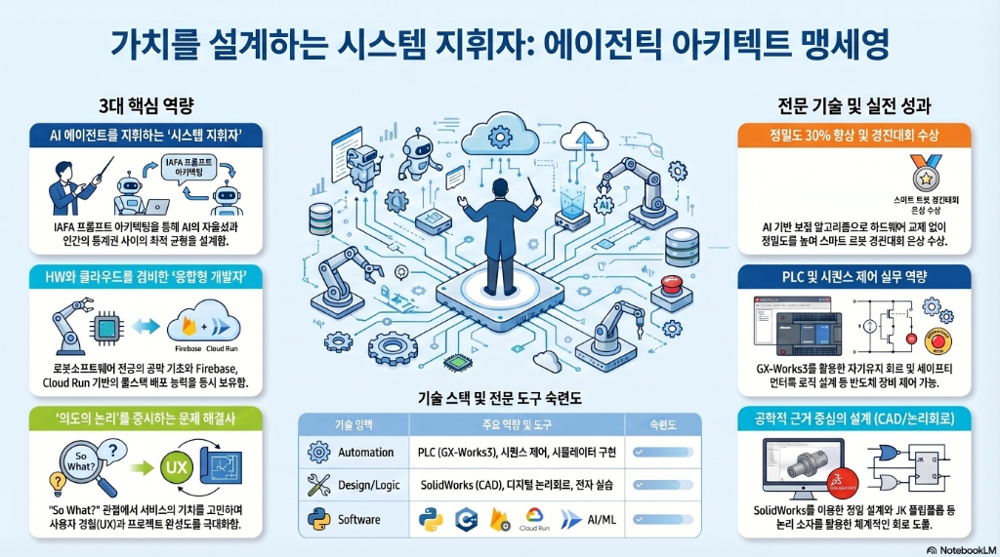
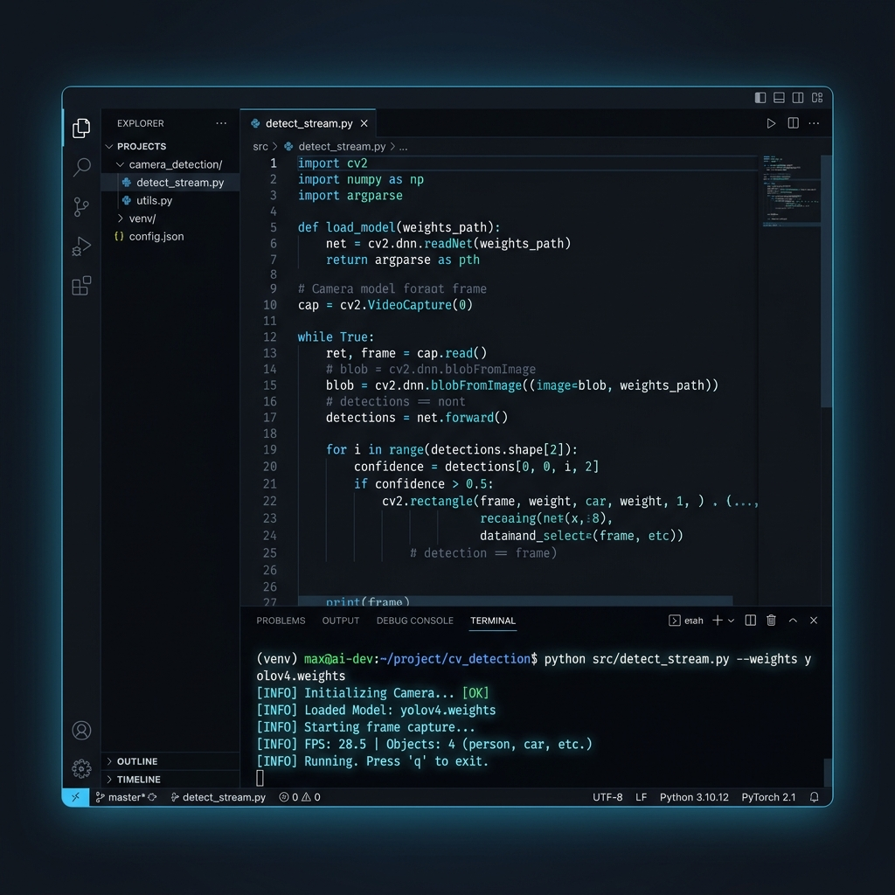
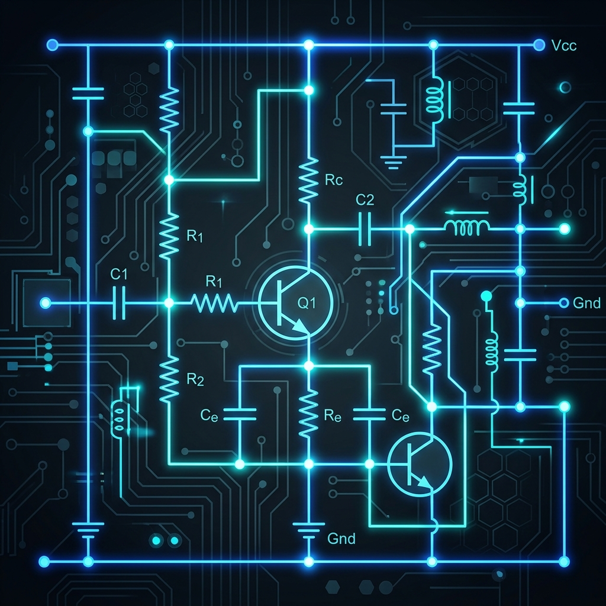

에이전틱 아키텍트의 3가지 핵심 역량
1. 에이전틱 아키텍트 (Agentic Architect)
단순히 코드를 타이핑하는 '코더'를 넘어, AI 에이전트에게 명확한 설계 지침을 하달하고 복잡한 시스템을 구축하는 시스템 지휘자입니다. IAFA 프롬프트 아키텍팅(정체성, 사용자, 기능, 미학)을 활용하여 AI가 정교한 결과물을 산출하도록 유도하며, 에이전트의 자율성과 인간의 통제권 사이에서 최적의 균형을 설계합니다.
2. 융합형 개발자 (Full-stack Integrator)
로봇소프트웨어학 전공으로 디지털 논리회로, 전자 실습, Python, CAD 등의 탄탄한 공학적 기초 지식을 보유하고 있습니다. 여기에 Firebase Studio, AppSheet, Cloud Run을 활용한 풀스택 배포 실무 능력을 더해, 하드웨어적 사고와 현대적인 클라우드 기반 서비스 구축 능력을 동시에 발휘합니다.
3. 결과 중심적 문제 해결사 (Problem Solver)
기술적 구현 자체에 매몰되지 않고, "이 기능이 왜 필요한가? (So What?)" 관점에서 가치를 고민합니다. 생성된 산출물(Artifacts)을 정밀하게 검증하여 프로젝트의 직무 완성도와 경험(UX)을 극대화하며, 단순한 코드가 아닌 설계와 기획 의도(Vibe)가 살아있는 솔루션을 구현합니다.

5 Core Competencies
1. AI 기반 시스템 최적화 역량
AI 보정 알고리즘 설계: 캡스톤 디자인 프로젝트에서 로봇 팔의 정밀도 문제를 해결하기 위해 하드웨어 교체 대신 AI 기반 보정 알고리즘을 제안하여 정밀도를 30% 향상시킨 경험이 있습니다.
유지보수 가치: 노후 장비나 기계적 오차를 소프트웨어적 아키텍팅으로 보완하여 장비 수명을 연장하고 비용을 절감하는 삼성전자의 '창의적 인재' 상에 부합합니다.
2. 반도체 자동화 및 PLC 전문성
GX-Works3 숙련도: 반도체 부트캠프와 전공 수업을 통해 GX-Works3를 활용한 시퀀스 제어 및 래더 다이어그램 작성 능력을 확보했습니다.
안전 로직 설계: 반도체 공정 안정성을 위해 필수적인 '자기 유지 회로(Self-holding)'와 '인터록 회로(Interlock)' 논리를 완벽히 설계할 수 있습니다.
3. 에이전틱 아키텍팅 및 DX 역량
IAFA 프롬프트 설계: AI 에이전트를 넘어 IAFA 4요소를 활용해 명확한 설계 지침을 하달하는 시스템 지휘자 역량을 갖추었습니다.
Artifacts 검증: 산출물(코드, 로그)을 직접 분석하고 'So What?' 관점에서 UX와 완성도를 정밀 검증할 수 있습니다.
4. 데이터 기반 문제 해결 (Troubleshooting)
논리적 디버깅: PLC 실습 중 발생한 타이머 오류와 통신 간섭 문제를 회로도 기반으로 끝까지 추적하여 해결한 끈기가 있습니다.
실시간 모니터링: C#을 이용한 윈도우 프로그래밍으로 로봇 및 장비 상태를 실시간 관리하는 시스템 추적 경험이 있습니다.
5. 하이브리드 서비스 구현 (Cloud)
풀스택 배포 실무: Firebase와 AppSheet를 연동하여 데이터베이스가 통합된 하이브리드 서비스를 실제 클라우드에 배포하고 관리해본 경험이 있습니다.
유지보수 혁신: 장비 로그 데이터를 클라우드로 관리하여 예지보전(Predictive Maintenance) 시스템을 구축할 수 있는 기반 역량입니다.
Career Timeline
육군 만기 전역 (책임감 및 협업 역량)
규정 준수와 매뉴얼 기반 대응 역량을 체득했으며, 팀 단위 임무 수행을 통해 조직 내 책임감과 협업의 중요성을 증명했습니다.
전공 심화 및 AI 에이전틱 아키텍팅 연구
전통적인 엔지니어링 툴에 생성형 AI 모델 협업 기술을 접목시키는 방법을 연구하며, 현장에 필요한 최신 DX 역량을 길렀습니다.

UR 전공동아리 (시스템 통합 실무)
로봇 설계, 제작, 프로그래밍 전 과정을 이수했습니다. 하드웨어와 소프트웨어가 유기적으로 결합되는 시스템 통합(System Integration)의 원리를 깊이 이해했습니다.
편의점 실무 (현장 문제 해결)
다양한 돌발 상황 속에서 고객과 소통하며 최선의 해결책을 도출하는 현장 대응력을 길렀습니다.
📈 역량 성장 곡선 (Growth Trajectory)
Technical Arsenal
전공 기초: 기계 및 논리 설계
3차원 CAD(SolidWorks)를 통한 부품 설계 역량과 디지털 논리회로(상태 천이표, 카르노맵 해석)를 활용한 논리적 설계 사고를 확립했습니다.

전공 실무: 전자회로 및 MCU 제어
BJT 증폭 및 스위칭 실험을 통해 하드웨어의 미세 신호 제어 원리를 익혔으며, 아두이노 기반 MCU 제어로 시스템 자동화 실무를 수행했습니다.
고도화 기술: 자동화 및 모니터링
GX-Works3를 이용한 PLC 시퀀스 제어 및 C# 기반 로봇 모니터링 툴 개발을 통해 설비와 소프트웨어의 융합 역량을 확보했습니다.
Engineering Case Study
사례 1. AI 기반 로봇 정밀도 보정
- Why this design? 하드웨어 노후화로 인한 정밀도 저하 문제를 막대한 교체 비용 없이 소프트웨어적으로 해결하기 위해 머신러닝 알고리즘을 선택했습니다.
- Process: 제어 데이터를 수집하고 회귀 분석 모델을 적용하여 구동 오차를 실시간으로 보정하는 로직을 설계했습니다.
- Result: 하드웨어 교체 없이 정밀도를 30% 향상시키고 장비 가동 수명을 연장하는 비용 절감 효과를 거두었습니다.
사례 2. 삼거리 신호등 논리 제어 설계
- Why this design? 복잡한 신호 체계에서 발생할 수 있는 교차 오류를 방지하고 최적의 타이밍을 구현하기 위해 JK 플립플롭과 상태 천이표를 활용한 논리 설계를 수행했습니다.
- Process: 각 신호 상태를 논리 변수로 정의하고, 카르노 맵을 통해 최소화된 논리식을 도출하여 제어 로직의 신뢰성을 확보했습니다.
- Result: 공학적 근거에 기반한 무결점 신호 제어 시스템을 설계하여 논리 회로 설계 능력을 증명했습니다.
Safety Interlock Simulation
반도체 제어 프로세스의 실무 능력을 증명하기 위해 직접 구축한 '자기 유지 회로' 시뮬레이터입니다.
반도체 공정 중 돌발 상황에서도 연속성을 유지하고, 비상 시 즉각 차단하여 설비 파손과 웨이퍼 손실을 막기 위한 설계입니다. 자기 유지 회로는 일시적 신호 오류 발생 시에도 시스템 가동을 안정적으로 유지하는 필수 로직입니다.
HMI Control Panel
Ladder Logic (자기 유지 회로)
Contact Me
가동률의 한계를 돌파할 준비가 되어 있습니다. 언제든지 연락 주시기 바랍니다.
방문자 메세지 전송
작성해주신 메세지는 제 이메일로 즉시 전달됩니다.
Recruiter Interaction
자유게시판에서 소통하기
기록을 남기거나 질문, 요청 사항이 있으시면 자유게시판을 이용해주세요.
실시간 소통과 기록 관리를 위해 별도의 게시판 공간을 마련했습니다.
DX 역량 증명
이 게시판은 LocalStorage 기반의 CRUD 시스템으로 구축되어 있으며, 데이터 영속성과 동적 사용자 경험을 제공합니다.